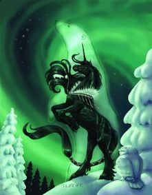

Inupiat
"You have the strength and spirit to face any challenge."

- Inupiat is named for the band of Native Americans living in the farthest northern reaches of the state of Alaska in the United States.
- Their harsh arctic environment has made this tribe hardy and self-sufficient.
- Inupiat's animal companion is the Polar Bear.
- Inupiat is a black unicorn with a decorative harness and breastplate. His tail is wrapped. He is seen rearing with the spirit of the polar bear beside him. A snowy owl watches the magnificent display from the foreground.
Inupiat's majestic appearance is symbolic of his message, that no matter what your circumstances, you have the strength and spirit to rise to the challenge, like the hardy Inupiat tribe who survive despite living in a deadly environment.